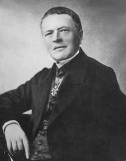

| USSR | |||
|---|---|---|---|
| No Bomb | Bomb | ||
| US | No Bomb | Peace, Peace | Peace + No Power, Peace + Power |
| Bomb | Peace + Power, Peace + No Power | Cold War, Cold War | |
| Bob | |||
|---|---|---|---|
| Signal | |||
| Alice | 1, 1 | 0, 0 | |
| Signal | 0, 0 | 2, 2 | |
| Beatrix | |||
|---|---|---|---|
| Heads | Tails | ||
| Adelbrecht | Heads | 1, -1 | -1, 1 |
| Tails | -1, 1 | 1, -1 | |
